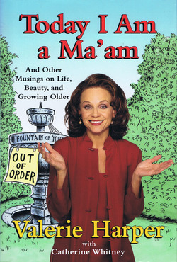
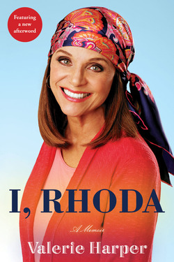

Valerie Harper was an American actress. Harper's career was marked by
her talent, humor, and her iconic portrayal of Rhoda Morgenstern.
She left a significant impact on the world of entertainment and was beloved
by audiences for her contributions to television and the arts.
Life and Career
She was born on August 22, 1939, in Suffern, New York, and passed away
on August 30, 2019. Valerie was the middle child of three. She was
raised Catholic, although at an early age she "quit" the church. When
she was a child she went to different schools due to her fathers work
from her.
Harper began her show business career as a dancer and chorus girl on
Broadway, and went on to perform in several Broadway
shows, While doing theater in Los Angeles in 1970, Harper was
spotted by casting agent Ethel Winant, who called her in to audition
for the role of "Rhoda Morgenstern" on
The Mary Tyler Moore Show.
Valerie Harper had a successful career as an American actress. She was
known for her work in television, film, and on the stage. Here are
some highlights of her career:
The Mary Tyler Moore Show (1970-1974):
Harper gained widespread recognition for her role as Rhoda Morgenstern
on the hit TV series "The Mary Tyler Moore Show." She played the
character of Rhoda, who was the best friend and neighbor of Mary
Richards
Rhoda (1974-1978):Harper's character, Rhoda Morgenstern, was so popular on "The
Mary
Tyler Moore Show" that it led to a spin-off series titled "Rhoda."
This show focused on Rhoda's life and adventures in New York City.
Harper continued to receive critical acclaim and awards for her role
in this series
In addition to her television work, Valerie also had a presence in
films and theater. She appeared in movies such as
"Freebie and the Bean" (1974) and
"Chapter Two" (1979), based on Neil Simon's play. She
also performed in various stage productions, including
"The Tale of the Allergist's Wife," which earned her a
Tony Award nomination.
Awards
Valerie Harper's portrayal of Rhoda, a warm and witty character,
earned her several awards and nominations, including four Primetime
Emmy Awards for Outstanding Supporting Actress in a Comedy Series. She
was a beloved figure in the world of television during the 1970s and
remained a respected actress throughout her career.
She was nominated for many awards of which it won 4:
Primetime Emmy (1971)
Category: Outstanding Supporting Actress in a Comedy Series in her
role in "The Mary Tyler Moore Show."
Primetime Emmy (1973)
Category: Outstanding Supporting Actress in a Comedy Series in her
role in "The Mary Tyler Moore Show."
Golden Globe (1974)
Category: Best Actress in a TV Comedy Seriesin her role in
"Frebie and the Bean."
Primetime Emmy (1975)
Category: Outstanding Lead Actress in a Comedy Series her role in
"Rhoda."
work
Latest roles on TV
Year
Title
Role
2016
Childrens Hospital
Mamma Fiorucci
2015
2 Broke Girls
Nola
2015
Melissa & Joey
Aunt Bunny
2014
Signed, Sealed, Delivered
Theresa Capodiamonte
2014-2019
American Dad!
IHOP Diner / Various
2013
Dancing with the Stars / The View
Herself
2013-2018
The Simpsons
Various characteres
2007-2016
entertainment Tonight
herself
Books
Today I Am a Ma'am

Today I Am a Ma'am
Valerie Harper has a message for women of a certain age: “Work those laugh lines!” With the irreverence and
wit that made her one of television’s most beloved personalities, Harper (a.k.a. Rhoda Morgenstern) takes on
those phony “fabulous at 50” books written by women whose skin is free of laugh lines and who wouldn’t know a
cellulite pocket if it bit them on the backside. With her trademark shoot-from-the-hip,
call-'em-like-she-sees-’em style, she helps women celebrate, with humor and grace, what it means to be middle
aged.
I, Rhoda

I, Rhoda
As Mary Richards's lovable and self-deprecating best friend Rhoda Morgenstern on The Mary Tyler Moore Show,
Valerie Harper, too, turned the world on with her smile. Viewers could relate to Rhoda, native New Yorker and
struggling working girl, who was unlucky in love and insecure about her weight but who always kept her sense
of humor.
Valerie was an unknown actress when she won the part that made her famous, and by the time Rhoda, her popular
spin-off show, ended, she had won four Emmys and a Golden Globe. The role was groundbreaking.